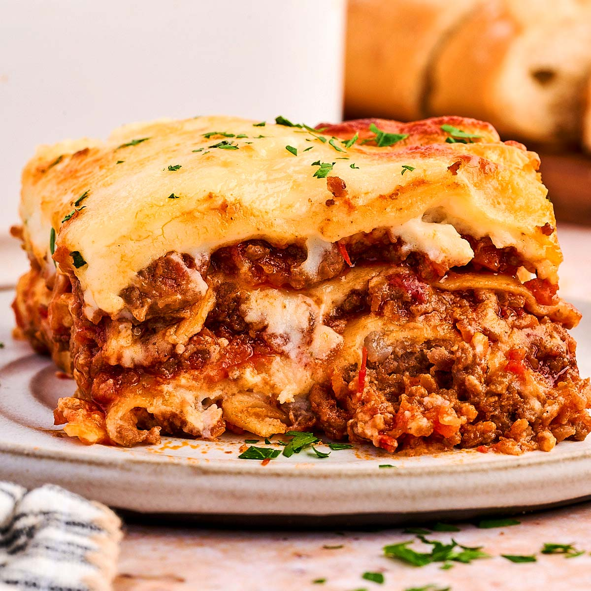

Back to Home
Lasagna

Description
This classic homemade lasagna is made with layers of rich meat sauce, creamy ricotta cheese, and melted mozzarella. It is a hearty and delicious comfort meal that is perfect for feeding a crowd.
Follow the steps below to prepare the ingredients and bake this dish to perfection.
Ingredients
- 1 pound ground beef
- 1 package lasagna noodles
- 2 cups ricotta cheese
- 2 cups shredded mozzarella cheese
- 3 cups marinara sauce
- 1 egg
- 1 tbsp dried italian seasoning
- Salt and black pepper to taste
Here are the steps to make this Homemade Lasagna:
Steps to follow
- Boil the Noodles:Bring a large pot of salted water to a boil.Cook the lasagna noodles according to the package instructions until al-dante (cooked through,but still firm). Drain the water and set the noodles aside.
- Brown the Meat:In a skillet or pan over medium heat,cook the ground beef until it is fully browned.Drain any excess fat from the pan
- Simmer the Sauce:add the marinara sauce and italian seasoning to the meat.Season with a pinch of salt and black pepper.Stir well and let it simmer on low heat for about 10 minutes.
- Prepare the Cheese Mixture:In a bowl,mix the ricotta cheese with one beaten egg, a little salt,and pepper until smooth and well combined.
- Assemble the Layers:In a baking dish,build the lasagna in layers
- Bake the Lasagna:Cover the baking dish with aluminum foil and bake in a preheated oven at 375°F (190°C) for 25 minutes. Remove the foil and bake for another 15 to 20 minutes until the top cheese is melted,golden, and bubbling.
- Let it Rest and Serve:Remove the lasagna form the oven and let it sit for 15 minutes before slicing.This helps the layers set so it doesn't fall apart when served